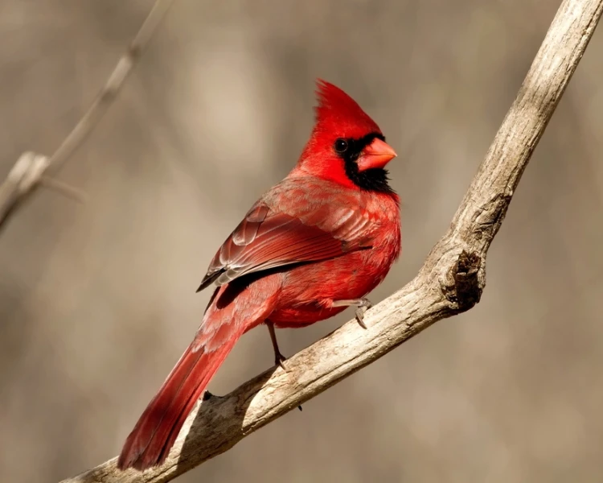
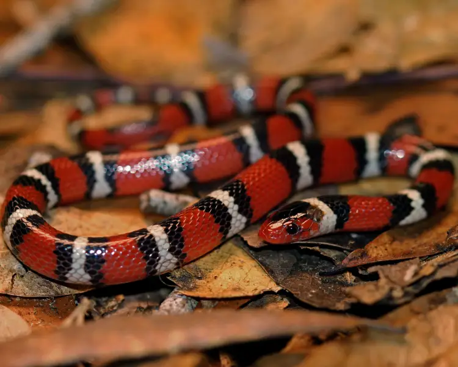

Northern Cardinal
Male Northern cardinals are unmistakable in their vibrant red plumage. Females of this species are not so bright but are also attractive being reddish olive in color. These birds have distinctive crests on their heads and masks on their faces which are black in the males and gray in the females. Did you know that the plumage color of the males is produced from carotenoid pigments in the diet? Coloration is produced from both red pigments

Scarlet Kingsnake
These brightly colored non-venomous snakes can be found in pine flatwoods, pine-oak forests, prairies, and cultivated and suburban areas of the United States. Scarlet kingsnakes are secretive nocturnal snakes and are rarely seen by people. They are excellent climbers. They typically hide underneath the loose bark on rotting pines, under the bark on decaying pines and their stumps, and on decaying wood, where they also hunt for their prey.